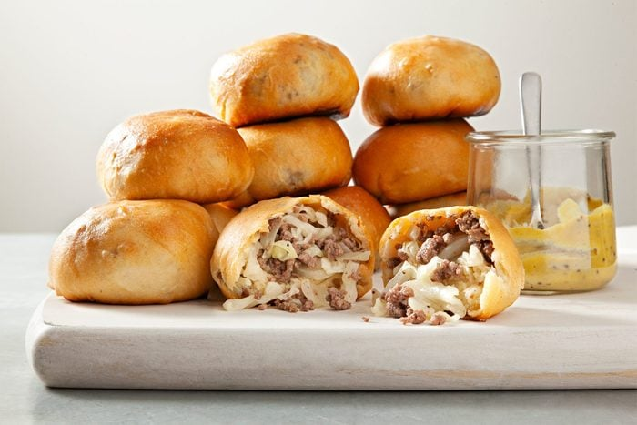

Krautburger 🇩🇪

Description
A lean version of a German beef and cabbage filled roll. They freeze very well, and are good dipped in mustard
Ingredients
- 1 pound lean ground beef
- 1 onion, chopped
- 1/2 medium head cabbage, shredded
- 1/2 (1 ounce) package dry onion soup mix
- 1 (8 ounce) package mild Cheddar cheese, sliced black pepper to taste
- (1 pound) loaves frozen bread dough, thawed
- butter flavored cooking spray
- 1/4 cup margarine, melted
Steps
- Preheat oven to 350 degrees F (175 degrees C). Place ground beef in a large, deep skillet. Cook over medium high heat until evenly brown. Drain fat. Stir in cabbage and onion soup mix; cook 5 minutes longer, or until lightly browned. Set aside.
- Roll one loaf of bread dough into a 16x8 inch rectangle, then cut into eight 4 inch squares. Spoon cabbage mixture into center of each square, top with 1 small slice cheese and bring up diagonal points, pinching edges closed. Place krautburgers on a cookie sheet coated with cooking spray, and let rise for about 10 minutes.
- Bake for 20 minutes, or until brown. Brush tops of warm rolls with margarine. Repeat process with second loaf of bread and remaining cabbage mixture and cheese.
Recipe Source: